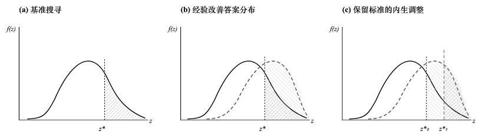

1 边际贡献
引入历史经验积累，拓展经典消费者搜寻模型
经典消费者搜寻模型通常将搜寻结果的概率分布视为外生给定。本文将消费者历史经验引入模型，并将其刻画为影响生成式人工智能答案质量分布的状态变量，从而分析经验积累如何改变消费者的 GenAI 使用决策、保留答案质量及搜寻行为。
补充生成式人工智能研究的微观个体视角
现有生成式人工智能研究主要关注技术性能、生产率提升、企业应用及宏观经济影响，对消费者如何评价 GenAI 答案、决定是否继续搜寻以及拓展 GenAI 使用主题的微观决策过程关注相对不足。本文从消费者搜寻行为出发，刻画生成式人工智能使用的形成机制。
揭示历史经验影响 GenAI 深度使用的双重效应
历史经验一方面改善 GenAI 答案分布，提高消费者获得高质量答案的效率，形成质量效应；另一方面提高消费者的内生保留答案，使其对 GenAI 答案提出更高标准与要求，形成标准效应。两种效应方向相反，因此历史经验对 GenAI 深度使用的净影响取决于二者的相对强弱。

2 基本假定
假定 1答案质量分布。 消费者使用 GenAI 后获得的答案质量为 z，其条件分布取决于消费者的历史经验 e，即 z∼F(z|e)。其中，F(·|e) 为连续分布函数，密度函数为 f(z|e)，答案质量上界为 z̄。
假定 2历史经验改善答案质量分布。 历史经验能够提高 GenAI 所生成答案的平均质量，并降低答案的不确定性：z=μ(e)+σ(e)ε，且 μ′(e)>0、σ′(e)<0。其中，μ(e) 表示平均质量，σ(e) 表示答案质量的不确定性。
假定 3搜寻成本。 消费者每次调用 GenAI 搜寻答案均需支付不随历史经验变化的固定成本 c。
假定 4消费者决策。 消费者观察答案质量后，可以接受当前答案并停止搜寻，也可以支付搜寻成本继续获取新的答案。不同次搜寻相互独立，且在给定经验状态下具有相同的答案分布。
3 基准模型
令 V(e) 表示消费者在经验状态 e 下开始 GenAI 答案搜寻时的最大期望价值。消费者获得答案 z 后，可以立即接受该答案获得 z；也可以放弃当前答案并继续搜寻获得 V(e)。由此，接受或继续搜寻的价值为 max{z,V(e)}。
定义保留答案质量为 z*，当消费者搜寻到的答案质量满足 z≥z*(e) 时，消费者接受答案并停止搜寻，反之继续搜寻。保留答案质量由下式内生决定：
搜寻成本恰好等于获得质量高于当前保留标准答案的期望改善收益。给定经验 e，消费者利用 GenAI 搜寻一次答案便接受的概率为：
考察历史经验积累对此概率的影响：
历史经验改善答案质量分布，使答案超过给定保留标准的概率提高，形成质量效应；同时，答案质量分布改善提高继续搜寻的预期收益，使内生保留答案质量提高，形成标准效应。前者提高一次搜寻后接受答案的可能性，后者降低一次搜寻后的接受概率。
由于每次搜寻相互独立，且每次接受概率均为 p(e)，消费者期望搜寻次数为：
历史经验对期望搜寻次数的影响同样包含双重效应：
当标准效应占主导时，历史经验增加期望搜寻次数；当质量效应占主导时，历史经验减少期望搜寻次数。
4 实证设计
数据来源与样本
本文使用公开发布的四国 ChatGPT 用户对话级微观数据。数据覆盖巴西、印度、尼日利亚和巴基斯坦，包含 1,252 名参与者的 202,590 条对话记录，并通过匿名用户标识关联用户人口统计特征与对话信息。
数据提供对话创建时间、用户消息轮数、消息文本长度及所用模型等信息，同时包含基于大语言模型分类生成的对话主题、使用场景、任务完成情况和任务复杂度等指标。本文在清洗与整理基础上构建用户—周度面板，考察历史经验积累与消费者 GenAI 使用行为之间的关系。印度等四国的 GPT 使用情况被整理为用户—周度面板，样本量超过 8 万。
经验与使用行为
经验变量以用户截至当期的历史使用积累衡量，并取自然对数。使用行为依次从三个层次展开：是否使用 GenAI、使用深度以及使用主题范围。使用深度结合对话轮数、消息长度及任务复杂度刻画；主题范围以用户当期涉及的知识主题数量衡量。
5 历史经验与消费者是否使用 GenAI
假说 1：历史经验促进消费者使用 GenAI
| 变量 | (1) | (2) | (3) | (4) | (5) | (6) |
|---|---|---|---|---|---|---|
| use | use | use | use | use | use | use |
| lnexp | 0.128*** (0.001) | 0.052*** (0.001) | 0.078*** (0.002) | 0.039*** (0.001) | 0.048*** (0.001) | 0.036*** (0.001) |
| _cons | −0.007** (0.003) | 0.005** (0.002) | 0.156*** (0.007) | 0.015*** (0.003) | 0.022*** (0.002) | 0.028*** (0.004) |
| 控制变量 | 否 | 是 | 否 | 是 | 是 | 是 |
| 个体固定效应 | 否 | 否 | 是 | 是 | 否 | 是 |
| 时间固定效应 | 否 | 否 | 是 | 否 | 是 | 是 |
| N | 85119 | 85119 | 84992 | 84992 | 85119 | 84992 |
| Adj. R2 | 0.181 | 0.647 | 0.347 | 0.769 | 0.655 | 0.771 |
表 1 显示，lnexp 在六个模型中均为正且显著。历史经验积累与消费者使用 GenAI 的可能性呈正向关系，在加入控制变量、个体固定效应和时间固定效应后，结论保持稳定。
6 历史经验与消费者 GenAI 使用深度
假说 2：历史经验整体上促进消费者的 GenAI 深度使用
| 变量 | (1) | (2) | (3) | (4) | (5) | (6) |
|---|---|---|---|---|---|---|
| lndepth | lndepth | lndepth | lndepth | lndepth | lndepth | lndepth |
| lnexp | 0.434*** (0.003) | 0.730*** (0.011) | 0.320*** (0.006) | 0.376*** (0.021) | 0.725*** (0.011) | 0.406*** (0.022) |
| _cons | −0.329*** (0.011) | 2.130* (1.100) | 0.048** (0.020) | 1.280 (1.026) | 2.351** (1.101) | 1.711* (1.025) |
| 控制变量 | 否 | 是 | 否 | 是 | 是 | 是 |
| 个体固定效应 | 否 | 否 | 是 | 是 | 否 | 是 |
| 时间固定效应 | 否 | 否 | 是 | 否 | 是 | 是 |
| N | 85087 | 26243 | 84960 | 26124 | 26241 | 26122 |
| Adj. R2 | 0.214 | 0.230 | 0.416 | 0.345 | 0.243 | 0.360 |
表 2 中，lnexp 的系数在全部规格中为正且显著，历史经验整体上促进消费者更深度地使用 GenAI。
7 质量效应、标准效应与使用深度
异质性假说
假说 2a：当标准效应大于质量效应时，历史经验促进消费者的 AI 深度使用。经验提高消费者的保留答案质量，消费者为获得符合更高标准的答案而增加搜寻与互动。
假说 2b：当标准效应小于质量效应时，历史经验降低消费者的 AI 深度使用。经验改善答案分布，使消费者更快获得可接受答案并减少后续搜寻。
| 变量 | (1) | (2) | (3) | (4) | (5) | (6) |
|---|---|---|---|---|---|---|
| lndepth | lndepth | lndepth | lndepth | lndepth | lndepth | lndepth |
| lnexp | −0.263*** (0.044) | −0.123*** (0.036) | −0.042 (0.032) | 0.652*** (0.035) | 0.684*** (0.042) | 0.690*** (0.050) |
| _cons | 0.207 (1.030) | 0.648 (1.013) | 0.750 (1.006) | 0.963** (0.471) | 0.906* (0.478) | 1.265** (0.537) |
| 控制变量 | 是 | 是 | 是 | 是 | 是 | 是 |
| 个体固定效应 | 是 | 是 | 是 | 是 | 是 | 是 |
| 时间固定效应 | 是 | 是 | 是 | 是 | 是 | 是 |
| N | 6231 | 8643 | 11127 | 19865 | 17457 | 14980 |
| Adj. R2 | 0.332 | 0.319 | 0.312 | 0.373 | 0.374 | 0.375 |
表 3 呈现出经验效应的方向差异：前三列系数为负，后三列系数为正。经验积累对 GenAI 使用深度的影响取决于消费者所处的经验分位区间，质量效应与标准效应在不同群体中呈现不同的相对强度。
| 变量 | (1) lnz | (2) lndepth | (3) lnz | (4) lndepth | (5) lnz | (6) lndepth |
|---|---|---|---|---|---|---|
| lnexp | 0.024** (0.011) | 0.391*** (0.021) | −0.019 (0.022) | −0.113*** (0.035) | 0.062*** (0.019) | 0.644*** (0.040) |
| lnz | 0.608*** (0.012) | 0.512*** (0.018) | 0.648*** (0.016) | |||
| _cons | 2.001*** (0.512) | 0.494 (0.977) | 1.542** (0.623) | −0.142 (0.962) | 0.786*** (0.218) | 0.398 (0.457) |
| 控制变量 | 是 | 是 | 是 | 是 | 是 | 是 |
| 个体固定效应 | 是 | 是 | 是 | 是 | 是 | 是 |
| 时间固定效应 | 是 | 是 | 是 | 是 | 是 | 是 |
| N | 26118 | 26118 | 8640 | 8640 | 17456 | 17456 |
| Adj. R2 | 0.186 | 0.419 | 0.179 | 0.386 | 0.199 | 0.428 |
答案质量 lnz 与使用深度之间呈现正向关系，历史经验通过答案质量改善影响深度使用；在不同经验组中，经验对答案质量与使用深度的作用方向并不相同。
知识主题作为中介变量
| 变量 | (1) lntheme | (2) lndepth | (3) lntheme | (4) lndepth | (5) lntheme | (6) lndepth |
|---|---|---|---|---|---|---|
| lnexp | 0.193*** (0.009) | 0.059*** (0.015) | −0.055*** (0.014) | −0.023 (0.027) | 0.285*** (0.017) | 0.178*** (0.029) |
| lntheme | 1.804*** (0.011) | 1.808*** (0.023) | 1.777*** (0.013) | |||
| _cons | 0.337 (0.404) | 1.102 (0.720) | 0.393 (0.377) | −0.063 (0.749) | 0.630*** (0.192) | −0.212 (0.335) |
| 控制变量 | 是 | 是 | 是 | 是 | 是 | 是 |
| 个体固定效应 | 是 | 是 | 是 | 是 | 是 | 是 |
| 时间固定效应 | 是 | 是 | 是 | 是 | 是 | 是 |
| N | 26122 | 26122 | 8643 | 8643 | 17457 | 17457 |
| Adj. R2 | 0.391 | 0.683 | 0.284 | 0.627 | 0.396 | 0.693 |
主题范围与使用深度正相关。经验积累能够扩展消费者与 GenAI 互动时涉及的知识主题，主题范围进一步关联更深度的使用。
8 消费者身份与 GenAI 使用
假说 3：相较于普通消费者，会员消费者在相同经验状态下更倾向于 GenAI 深度使用
会员消费者的使用行为从四个方面展开：会员使用 GenAI 的可能性更高；会员使用 GenAI 的深度更高；会员使用 GenAI 所获取的答案质量更高；会员使用 GenAI 所涉及的主题数量更广。
| 变量 | (1) use | (2) lndepth | (3) lnz | (4) lntheme |
|---|---|---|---|---|
| lnexp | 0.018*** (0.001) | 0.378*** (0.022) | 0.018 (0.011) | 0.183*** (0.009) |
| lnexp·plus | 0.008*** (0.002) | 0.118*** (0.015) | 0.025*** (0.007) | 0.038*** (0.006) |
| _cons | 0.009*** (0.003) | 1.632 (1.023) | 1.984*** (0.512) | 0.312 (0.404) |
| 控制变量 | 是 | 是 | 是 | 是 |
| 个体固定效应 | 是 | 是 | 是 | 是 |
| 时间固定效应 | 是 | 是 | 是 | 是 |
| N | 67513 | 26122 | 26118 | 26122 |
| Adj. R2 | 0.888 | 0.361 | 0.186 | 0.392 |
交互项 lnexp·plus 在四个模型中均为正且显著，会员身份强化历史经验与 GenAI 使用之间的正向关系，会员消费者在使用可能性、使用深度、答案质量与主题范围方面均表现出更高的经验响应。
9 结论
本文从消费者搜寻视角分析生成式人工智能使用的形成机制。理论模型将历史经验作为影响答案质量分布的状态变量，揭示经验积累通过质量效应与标准效应共同作用于消费者的接受决策、保留答案质量和后续搜寻。
实证分析沿着“是否使用—使用深度—主题范围”的路径展开。结果显示，历史经验促进消费者使用 GenAI，并整体上提高使用深度；在不同经验区间，质量效应与标准效应的相对强度不同，因而使用深度呈现异质性。答案质量和知识主题范围进一步构成经验影响深度使用的重要传导路径。会员身份强化了经验与 GenAI 使用之间的关系，会员消费者在使用、深度、答案质量和主题范围四个维度均体现出更强的正向响应。
消费者经验不仅改变其使用频率，也改变其评价答案的标准、搜寻策略和与 GenAI 互动的内容边界。生成式人工智能平台可以据此优化答案反馈、个性化服务和会员权益设计，使消费者经验积累转化为更稳定、更深入的使用关系。
技术附录
变量说明
use 表示用户—周度是否使用 GenAI；exp 表示历史使用经验；depth 表示使用深度；z 表示答案质量；theme 表示对话涉及的知识主题范围；plus 表示会员身份；ρi 与 μt 分别表示个体固定效应与时间固定效应。
经验积累的两个渠道
质量效应对应答案质量分布的改善：在同一保留答案质量下，消费者获得可接受答案的概率提高。标准效应对应保留答案质量的内生提高：消费者获得更多经验后形成更高质量要求，继续搜寻的价值上升。
实证结果索引
表 1 对应使用概率；表 2 对应使用深度；表 3 对应经验分位数异质性；表 4 对应答案质量中介；表 5 对应知识主题中介；表 6 对应会员身份异质性。
作品说明
本网页依据“生成式人工智能中的经验积累与消费者使用——消费者搜寻的视角”研究材料整理制作，延续个人主页研究网页的 Distill 风格，保留理论模型、研究假说、数据说明与六张实证回归表。